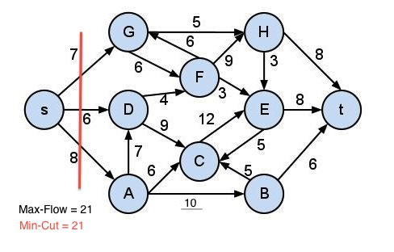

CS205 Harvard University Fall 2012
by Joshua Lee and Mona Huang
In a directed graph with edge weight capacities, the maximum flow is the maximum amount of capacity that can pass from the source node to the sink node. In the example below, the maximum flow is ___.
Equivalently, the maximum flow problem can be interpreted as finding the minimum cut. The minimum cut is the set of edges with the smallest aggregate weight that can be removed from the graph so that no path exists from the source to the sink. In the graph below, the minimum cut is the set of edges ______
There are several applications of the Max-Flow Min-Cut algorithm, including scheduling problems, bipartite graph selection problems, and optimization problems. For our project, we focused on the application of the Max-Flow Min-Cut algorithm for binary image segmentation.